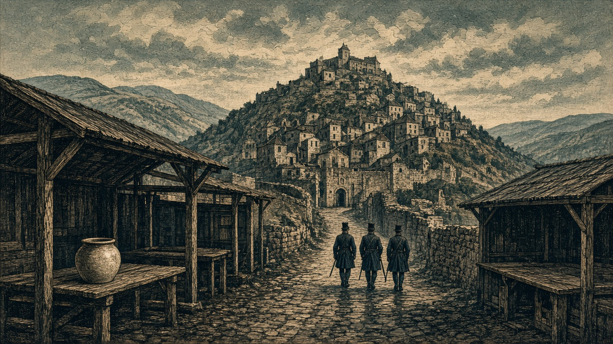
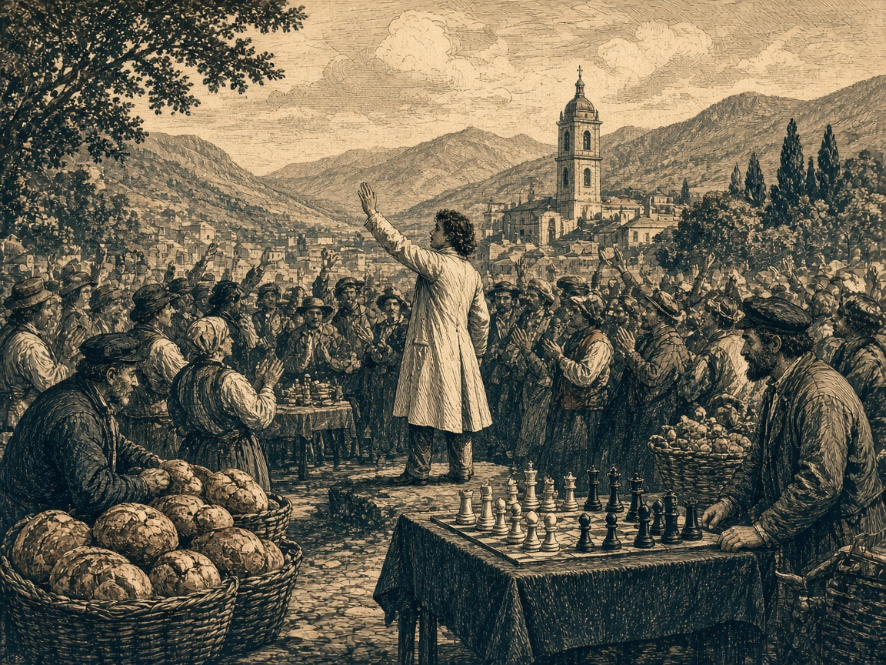

緑丘公国、ついに滅亡
オリョルッル軍が首都占領
最後の抵抗むなしく山岳兵全滅 兵站2か所で予備兵2,000人投降

【総合部】緑丘公国は第142期、オリョルッル王国軍に首都緑丘（16,46）を占領され、国家としての歴史に幕を閉じた。公国は国家一覧から姿を消し、所属していた同盟軍からも除かれた。長く続いた両国の戦争は、公国滅亡という結末を迎えた。
公国第32軍山岳兵は王国軍に最後の抵抗を試みたが、反撃を受けて全滅した。兵站2か所では計2,000人の予備兵が投降。工場（16,48）も王国領となり、資金100億円が接収された。首都で予定されていた徴兵は、王国軍による占領で中止された。
前期まで人口19,700人、兵力24,000人、領地7区画を保有していた公国は、独立国としての存在を終えた。最後の交戦と拠点の陥落は2面に詳報。
相次ぐ都市と兵站の喪失 最後の拠点も守れず
緑丘は王国軍との長い戦争で領土と軍事拠点を失い続けた。第137期には現代都市ノルミアが陥落。第138期には軍港と兵站基地を失い、兵員補充と輸送に打撃を受けた。第140期には首都区画の歩兵部隊が消滅し、第141期にも第32軍歩兵が全滅した。
第141期には桃谷連邦共和国から6,800人が移住した。新たな住民を迎えたその翌期、公国最後の山岳兵は戦闘で消滅し、首都を奪われた。
国を失った住民 占領後の暮らしは
前期の公国人口は19,700人。首都の占領により統治者が変わり、市場の商人は店を再開するにも王国の決まりを知らない。「店の看板は緑丘のままだ。兵隊が通っても、明日の仕入れを止めるわけにはいかない」と商人は話す。
王国軍は首都だけでなく兵站や工場も手に入れた。旧公国の住民が商売を続ける条件と、日々の安全をどう確保するかが新たな統治の課題となる。
第八丘を争った両国 領土問題も転機
両国には国境の小丘をめぐる「第八丘問題」があった。「七つの丘の国が八つ目を欲しがるのか」という緑丘側のからかいに、王国側は「八つ目ではない。数え直せば七つだ」と反論してきた。領土を争った公国は消滅したが、その歴史と住民の感情は占領後も残る。
チェスも人口1,000,000人突破 究極繁栄賞、世界3か国目
前期から19,800人増の1,005,100人 市場に「しろしろ！」の歓声
【総合部】チェス＝シロバキア共和国は第142期、人口が前期の985,300人から19,800人増え、1,005,100人となり、究極繁栄賞を受賞した。第132期のなのです主義人民共和国、第141期のオリョルッル王国に続く世界3か国目となる。

オリョルッルのファン「しろしろ！」 次の受賞を祝う
前期、オリョルッル王国の受賞を祝う市場では、チェスのアイドル「しろしろ」を応援する王国民が「次の1,000,000人はしろしろの国だ」と声を上げた。その予想はわずか1期で現実となった。
チェスの受賞を聞いたオリョルッル国民のファンも、王国の中央市場で腕を振り上げた。「( ﾟ∀ﾟ)o彡°しろしろ！しろしろ！」。独特の掛け声で隣国の快挙を祝う。「こんなに早く実現するとはね」とパン屋の男性は笑った。
チェスは今期の火災で14,700人が死亡したが、期末人口は1,005,100人。オリョルッルの人口は1,014,800人、なのですは993,500人となっている。
泰平、アルガの町を占領 食料50,000トンを徴発
【軍事部】泰平天国軍はアルガリスト帝国の町（46,40）を占領し、食料50,000トンを徴発した。首都アルガリスト（47,40）と大都市ヴァルセナは帝国領のまま。今期の戦果は泰平5,700人、帝国1,600人。帝国宰相の星書廉が声明を発表した。詳報3面。
黒潮首都に艦砲命中 住民700人が死亡
【軍事部】カペレナ王国の艦砲が黒潮自治国の首都（20,17）に2発命中し、300人と400人、計700人が死亡した。防衛施設（20,16）は累計3発の命中で破壊され、首都区画の第6方面軍歩兵も全滅した。詳報4面。
2か国で火災 死者38,300人
【社会部】なのです主義人民共和国で23,600人、チェス＝シロバキア共和国で14,700人が火災で死亡した。計38,300人。詳報4面。